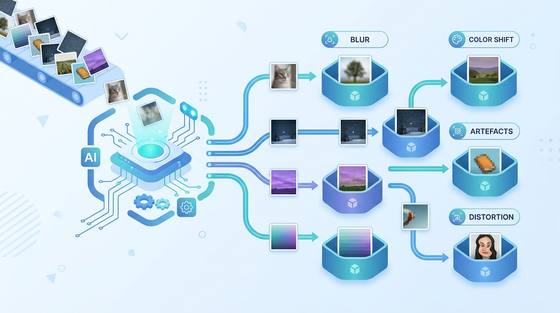
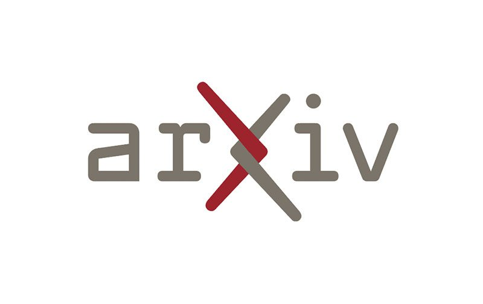

H.I.T. Pragmatic AI Lab

The H.I.T. Pragmatic AI Lab hosts research projects in state-of-the-art artificial intelligence and gives HIT students the opportunity to take part directly in research: contributing to experiments and publications, and gaining hands-on experience with emerging AI methods beyond standard coursework.
Evolving Research Systems
Working systems from the lab’s research program that grow over time as students extend them: robust perception, spec-driven generation, and sparse multi-agent coordination. Each links to source and documentation.
Student Research Projects
Projects by HIT students in the lab, several extending the lab’s CoEval and StableSteering platforms. Each is open to student participation.
-
Synthetic Adverse-Weather Data for Robust Object Detection
Driving detectors trained only on clear weather fail in rain, fog, and snow. This project generates realistic synthetic harsh-weather images with SDXL and dual ControlNet (depth and edges) to augment KITTI and train a more robust YOLOv8 detector. A model trained on 50% synthetic data cut the harsh-weather accuracy drop from 72% to 12%.
-
Synthetic Rare-Object Insertion for Robust Driving Perception
Driving datasets rarely contain animals, a safety-critical blind spot. This project inpaints photorealistic animals onto real KITTI scenes with SDXL and ControlNet depth, then trains a YOLOv11 detector; animal detection rose from 0% to 99.5% AP50 with under 2.5% regression on standard classes.
-
A Deep Learning Model for the Perceived Quality of Pixel Interpolation (QPI)
🤝 Samsung R&D Center collaboration
An industry collaboration with Samsung R&D Center: a deep learning model that mimics human raters, assigning perceived-quality labels to interpolated pixel patches in camera ISP pipelines, so new interpolation methods can be evaluated automatically and development cycles shortened.
-

Detecting and Classifying Image Distortions from Sensor Capture and ISP Pipelines
🤝 Samsung R&D Center collaboration
An industry collaboration with Samsung R&D Center: generating synthetic sensor and ISP distortions (blur, banding, moiré, color shifts) and training a model to detect and classify the distortion present, so degraded frames can be flagged and routed to the right correction.
-
Synthetic-Data-Driven Information Extraction from Technical Documents
Pulling structured specs from electronics PDF datasheets breaks traditional OCR on multi-column tables. This data-centric pipeline generates synthetic datasheets and fine-tunes DeBERTa-v3 for joint entity and relation extraction, reaching 0.59 F1 on real annotated datasheets.
-
StableSteering: Human-Preference Feedback for Interactive Image Generation
Extends the lab’s StableSteering image-generation platform with richer human feedback: style calibration from a few chosen images, per-dimension quality ratings, drag-to-rank priority weighting, and transparent preference analytics, so the system learns a user’s taste faster and more legibly.
-
StableSteering: Convergence Detection and Critique-Based Feedback
The lab’s StableSteering platform could not tell why a user preferred an output, or when steering had converged. This project adds convergence detection and a critique-tagging feedback mode; critique mode reached 38% higher accuracy than scalar ratings across 54 synthetic sessions.
-
Robust LLM-as-Judge Evaluation via Self-Distrust Mechanisms
LLM graders hallucinate praise for wrong code and crash on messy JSON. This teacher-student-judge pipeline is built to distrust its own judge, adding a Truth Gate that overrides false praise, ensemble consensus to catch erratic judges, and robust recovery from noisy model output.
-
CoEval: On-Demand Benchmark Generation for Ranking LLMs in Phishing Detection
Phishing-detection benchmarks are old and likely leaked into training data. MailRank generates a fresh three-way phishing benchmark on demand with the CoEval framework and validates it against real data; the small, free gemini-2.5-flash-lite ranked best, beating larger paid models.
-
CoEval: Reference-Free LLM Ranking for Specialized Clinical Domains
General English benchmarks cannot rank models for Israeli special-education speech-language pathology. Using CoEval with no pre-labeled data and 40 Hebrew clinical scenarios, this project produces clinically grounded, task-specific rankings validated by a certified SLP.
Publications
Papers from the lab and the frameworks its student projects build on.
-
2026Preprint
CoEval: Ranking Language Models for Custom Tasks Without Labeled Data or Trustworthy Benchmarks
arXiv preprint (arXiv:2606.03650)
CoEval ranks language models for a custom task without labeled data or a trusted benchmark, deriving a reliable ordering from the models’ mutual agreement and cross-evaluation. It evaluates capability with no ground-truth supervision, extracting a trustworthy verdict from consensus rather than labels.

-
2026Preprint
Framing, Judging, Steering: An Assessable Competency Model for Teaching Students to Reason With Generative AI
arXiv preprint (arXiv:2606.05983)
This work defines an assessable competency model, framing, judging, and steering, for teaching students to reason effectively with generative AI. It formalizes how a person evaluates and directs a model’s reasoning without full visibility into its internal state, coordinating with an opaque collaborator.
Students
Students who contributed to the projects above.
- Noam Hadad
- Tomer Atia
- Niv Saban
- Itay Matana
- Guy Yogev
- Dvir Manos
- Tomer Portal
- Yehonatan Rabuah
- Inbal Bolshinsky
- Almog Sasson
- Linoy Avraham
- Yanun Zruk
- Boaz Atya